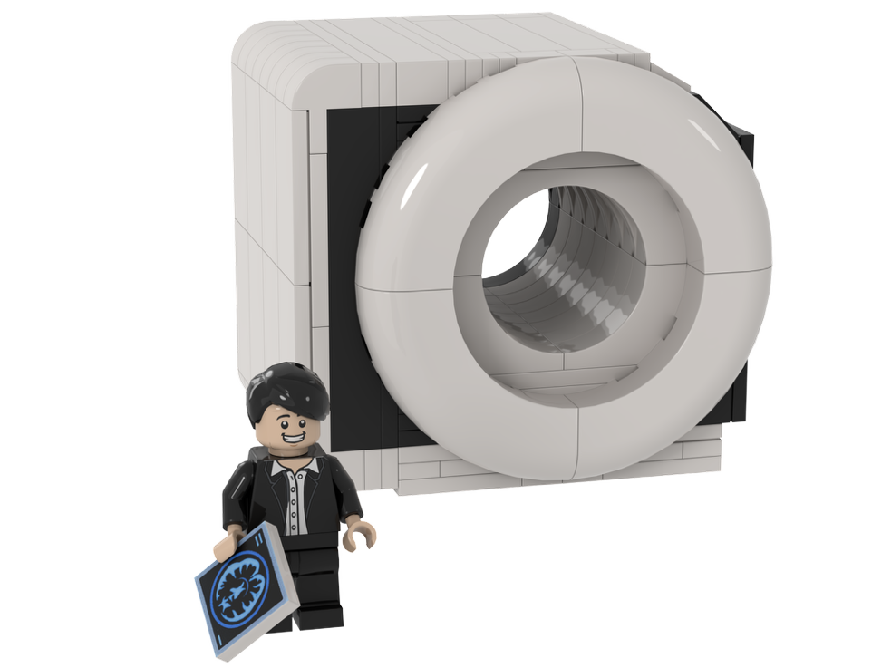

Emotion & empathy
How affective information shapes attention, choice, social connection, and care.
Affective neuroscience · Seoul
I am a Research Professor at Korea University investigating how emotion and empathy emerge across the brain, body, and our interactions with intelligent systems.

Emotion is both a biological signal and a social language.
My work brings together affective neuroscience, clinical research, engineering, and human–AI interaction. I use multimodal neuroimaging, psychophysiology, and non-invasive brain stimulation to study human emotion, empathy, and mood disorders.
Across these methods, one question stays central: how can individual biological signals help us understand—and build technologies that better support—social and emotional life?
Studying affect across neural circuits, physiology, behaviour, and technology.
How affective information shapes attention, choice, social connection, and care.
Brain structure, connectivity, and change in empathy, mood, and clinical populations.
Vagal and electrical stimulation, autonomic regulation, EEG, and embodied signals.
Emotion-aware robotics, digital mental health, and socially intelligent AI systems.
Seven investigator-led projects spanning affective neuroscience, clinical translation, and empathic AI.
National IT Industry Promotion Agency · PJT-25-122281
National Research Foundation of Korea · RS-2025-23524143
National Research Foundation of Korea · RS-2023-00272647
Korea Health Industry Development Institute · HI21C0012020021
National Research Foundation of Korea · NRF-2018R1D1A1B07048820
National Research Foundation of Korea · NRF-2018R1E1A2A02086661
National Research Foundation of Korea · NRF-2017R1E1A2A01079266
A small interdisciplinary team connecting neuroscience, computation, and human behaviour.
Affective neuroscientist · Korea University
Researcher
Research Assistant
June Christoph Kang
June Christoph Kang
June Christoph Kang
June Christoph Kang
June Christoph Kang
Kang, Chi, Mok, Kim, Kim & Lee
Department of Data Science · Hanyang University
Department of Psychology · Yonsei University
College of Medicine · Korea University
Brain & Cognitive Engineering · Korea University
Data Science · Hanyang University
Psychology · Yonsei University
Korea University
Korea University
Korea University
Research collaborations and interdisciplinary conversations are always welcome.
cnsla@korea.ac.kr ↗